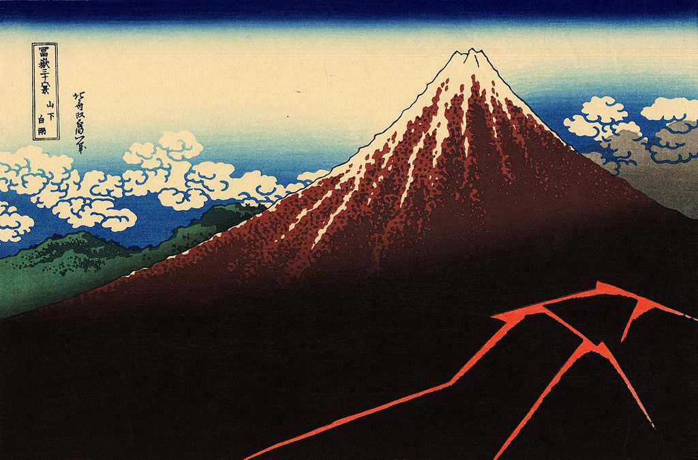

<head>
<meta charset="UTF-8" />
<meta name="keywords" content="drawing, painting" />
<meta name="description" content="drawings by Sunjy" />
<title>Sunjy</title>
<link rel="shortcut icon" type="image/x-icon" href="../../mImages/mCommon/favicon.ico" media="screen" />
<link rel="stylesheet" type="text/css" href="../../mCsses/mCommon/mCssA.css" />
<link rel="stylesheet" type="text/css" href="../../mCsses/mCommon/mCssB.css" />
<link rel="stylesheet" type="text/css" href="../../mCsses/mCommon/mCssC.css" />
<link rel="stylesheet" type="text/css" href="../../mCsses/mCommon/mCssD.css" />
<link rel="stylesheet" type="text/css" href="../../mCsses/mContent/mCssA.css" />
<link rel="stylesheet" type="text/css" href="../../mCsses/mContent/mCssB.css" />
<link rel="stylesheet" type="text/css" href="../../mCsses/mContent/mCssC.css" />
<link rel="stylesheet" type="text/css" href="../../mCsses/mContent/mCssD.css" />
</head>
<script type="text/javascript" src="../../mScripts/mContent/mContentAA.js" /></script>
<script type="text/javascript" src="../../mScripts/mContent/mContentAB.js" /></script>
<script type="text/javascript" src="../../mScripts/mContent/mContentAC.js" /></script>
<script type="text/javascript" src="../../mScripts/mContent/mContentAD.js" /></script>
<script type="text/javascript"></script> 
<script type="text/javascript">
document.write('<div class="mImgAbsolute"></div>');
/*
document.write('<p class="mFontSizeBColor" />From a white paper...</p>');
document.write('<table class="center"><tr><td>');
document.write('');
document.write('</td></tr></table>');
*/
</script>


<script type="text/javascript">
document.write('<p class="mFontSizeBColor" />Rainstorm Beneath the Summit</p>');
document.write('<p class="mFontSizeSColor" />“Rainstorm Beneath the Summit” by Katsushika Hokusai is different in composition to ‘”South Wind, Clear Sky” because the two designs are deliberately contrasting.<br><br>In this print, the calm, bright dawn has given way to evening darkness in which a storm erupts around the base of the mountain, forming an echo of the slopes.<br><br>The deep ravine on the left side of Mt Fuji shows the ‘back,’ that is, the north side of Mt Fuji.<br><br>Thus Hokusai has set up a contrast between this print and his previous design. In this print, we see the back view during an evening storm.<br><br>Whereas in “Fine Wind, Clear Morning,” the composition is the front view of Mt. Fuji during the morning in fair weather.<br><br>“Thirty-six Views of Mount Fuji” is one of the world’s unique series of images of various conditions and vantage points of the mountain that is synonymous with Japan.<br><br>This series was such a public success that the publisher expanded the original conception to include forty-six prints in this series.<br><br>This series is also celebrated for its particular blue color, called “Berlin indigo” (bero-ai), a pigment that had been newly introduced by Dutch merchants to Japan.<br></p>');
document.write('<table class="center" /><tr><td>');
document.write('<br>In this print, the calm, bright dawn has given way to evening darkness in which a storm erupts around the base of the mountain, forming an echo of the slopes.<br><br>The deep ravine on the left side of Mt Fuji shows the ‘back,’ that is, the north side of Mt Fuji.<br><br>Thus Hokusai has set up a contrast between this print and his previous design. In this print, we see the back view during an evening storm.<br><br>Whereas in “Fine Wind, Clear Morning,” the composition is the front view of Mt. Fuji during the morning in fair weather.<br><br>“Thirty-six Views of Mount Fuji” is one of the world’s unique series of images of various conditions and vantage points of the mountain that is synonymous with Japan.<br><br>This series was such a public success that the publisher expanded the original conception to include forty-six prints in this series.<br><br>This series is also celebrated for its particular blue color, called “Berlin indigo” (bero-ai), a pigment that had been newly introduced by Dutch merchants to Japan.<br>" />');
document.write('</td></tr></table>');
</script>


